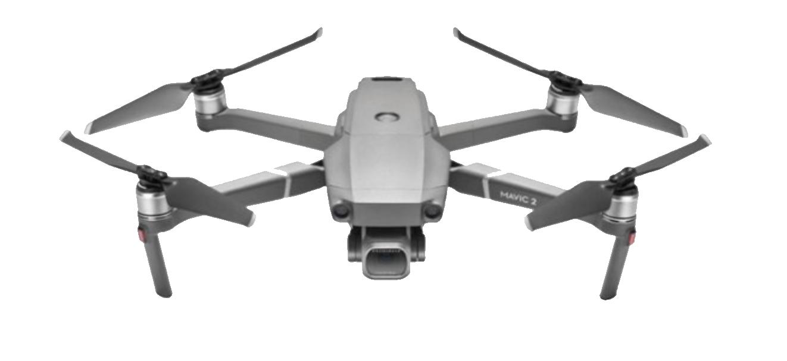

Playground · Voice UI Design
VUI Design — Set Up Meetings with Voice
A voice interface design exploration for setting up meetings while driving. This project explores how to design a natural, efficient voice-first experience for scheduling — handling multi-participant meetings, conflict resolution, and confirmation flows entirely through voice commands.
Design Overview
Interaction Patterns

